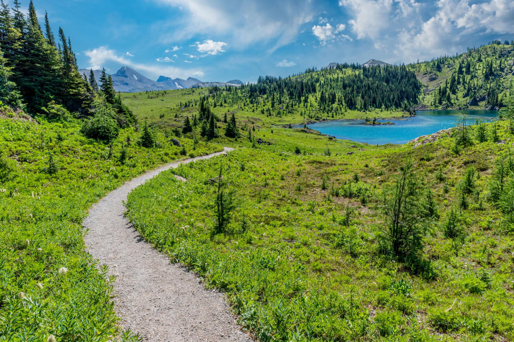

← Sunshine Meadows
🥾 Grizzly & Laryx Lakes
Sunshine Meadows
⭐ 한적한 고산 호수와 야생화를 함께 즐기는 힐링 트레킹

📅 우리 일정
Day 5 오후 (체력과 시간이 충분할 때 추천)
🏞 기대 풍경
💎 Grizzly Lake와 Laryx Lake
🌼 계절마다 피어나는 고산 야생화
🌲 조용한 숲길과 초원
🏔 로키 산맥의 탁 트인 풍경
📸 비교적 한적하게 자연을 즐길 수 있는 코스
📏 기본 정보
🚶 걷는 거리
왕복 약 8km
⏱ 걷는 시간
약 3~3.5시간
💪 난이도
보통
📈 고도차
약 300m
🚻 편의시설
✔ Sunshine Village 주차장
✔ 곤돌라 및 Standish Chairlift 이용
✔ 화장실 (베이스 및 상부)
✔ 카페 및 레스토랑
🎒 준비물
🥾 트레킹화 권장
💧 물 1~1.5L
🍫 간식 또는 에너지바
🧥 바람막이
🧴 선크림, 선글라스, 모자
📷 카메라
💡 여행 Tip
✔ Rock Isle Lake보다 한적한 분위기에서 트레킹을 즐기고 싶다면 추천하는 코스입니다.
✔ Grizzly Lake와 Laryx Lake는 각각 다른 분위기를 가지고 있어 두 호수 모두 둘러보는 것을 추천합니다.
✔ 비교적 긴 코스이므로 출발 전에 물과 간식을 충분히 준비하세요.
✔ 중간중간 야생화와 로키 산맥을 배경으로 사진 촬영하기 좋은 장소가 많습니다.
✔ 오후 늦게는 기온이 떨어질 수 있으므로 얇은 바람막이를 준비하면 좋습니다.
← Sunshine Meadows